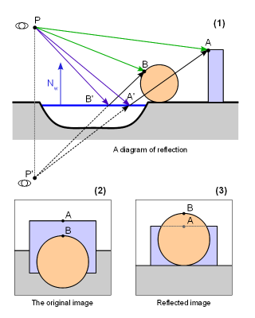
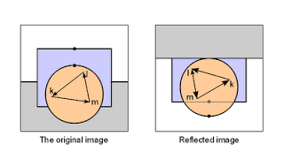
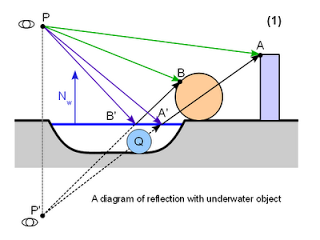
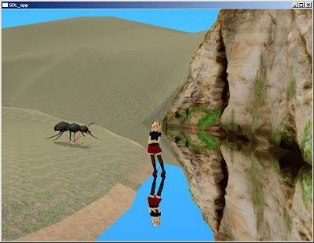
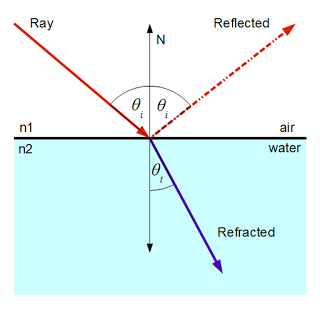
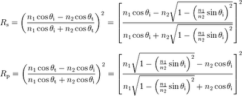
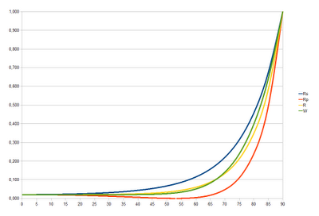
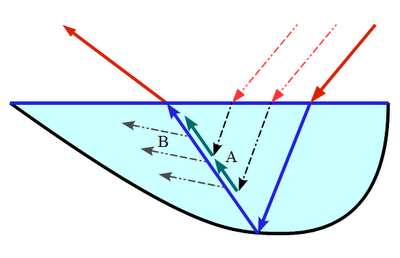
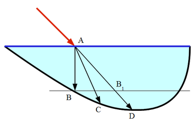
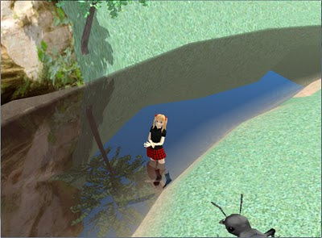

Good water simulation should have at least the following features:
- True reflection (with correct parallax)
- Clipping of underwater objects on reflection image
- View angle dependent transparency/reflectivity of water
- Ripples and/or waves
- Water scattering (i.e. water becoming gradually opaque as depth increases)
- Refraction
- Caustics - i.e. light spots at the bottom of shallow water
- Reflected light - i.e. light spots reflected to objects near water
Here I will describe the mathematics behind the scenes and give step-by-step guide to writing your own water system/object/rendering pass.
1.Rendering reflection texture
Water without reflection looks totally uninteresting - just like any other semitransparent surface. Thus we start from implementing reflection and later go on to other effects.
1.1. Parallax
Even if you have until now managed to render you scene in single pass, from this point on you need at least two passes (actually at least N+1, where N is the number of visible reflective surfaces).
The reason is, that unfortunately we cannot recycle our main scene image for reflections. First because it could make view frustum insanely large (for example - if viewing the water surface from high angle we see only ground and water in our main view, but mostly sky in reflection). And second because of parallax. The reflection is unfortunately not the perfect copy of reflected scene, but copy of the view of the same scene from different viewpoint. The following image illustrates this.
|  |
| A diagram explaining the parallax effect on reflected image |
{kind=link}
It means that you need to have rendering to texture set up and working. We will render reflection to texture and later use this texture while rendering the water surface in main scene.
Thus, to get reflection texture we first have to render our scene from the reflected camera viewpoint P' to texture. First we have to find the reflected camera position - or more precisely the reflected view matrix (because we need camera orientation too in addition to the position).
This can be done with the following formula:
M'camera = Mreflection * Mcamera
Where Mreflection is the reflection matrix of mirror surface. It can trivially be calculated from the position of reflection plane:
| 1-2Nx2 -2NxNy -2NxNz -2NxD |
Mreflection = | -2NxNy 1-2Ny2 -2NyNz -2NyD |
| -2NxNz -2NyNz 1-2Nz2 -2NzD |
| 0 0 0 1 |
Where (Nx,Ny,Nz,D ) are the coefficients of plane equation (xNx + yNy + zNz + D = 0 ). Notice, that (Nx,Ny,Nz) is also the normal vector of given plane.
Mcamera is the transformation of camera as if it would be "normal" object in scene. To get ModelView matrix you will need the inverse of it.
1.2. Mirrored geometry
Actually we cheated a little in the previous image. We rotated the mirrored image 180º to make it more similar to the original image, so the effect of parallax can be seen. The actual mirrored image looks like this:
|  |
| Different winding order on mirrored image |
{kind=link}
This may or may not be problem for you. If all your materials are double sided (i.e. you do not do back face culling) or if you can set up rendering pipeline in such a way, that you can change culling direction it is OK. In my case though, I prefer to keep culling always on and have forward-facing always defined as CCW. So something has to be done with the reflected image - or otherwise geometry will not render properly.
We will exploit the feature that camera is always (at least in most applications) rectangular and centered around view direction. Thus we can just flip camera in Y direction and the winding order will be correct again (it flips reflected image so it looks like (3) on the first picture).
This can be done with one more reflection matrix:
M''camera = Mreflection * Mcamera * Mflip
Where Mflip is simply another reflection matrix that does reflection over XZ plane.
Now if we render mirrored image using M''camera as camera matrix, pipeline can be left intact. We, of course, have to save this matrix for later reference, because it is needed to properly map our texture to water object in main render stage.
1.3. Underwater clipping
Take a look at the following picture:
|  |
| A reflection with underwater object |
{kind=link}
We have added an underwater object Q to our scene. Now it should not appear on reflection, because it does not block the actual reflection rays PB'B and PA'A. But we are not doing ray-tracing. We are instead moving camera to mirrored viewpoint P' and rendering reflection like normal image. But as you can see, the object Q blocks ray P'A'A and thus would show up in our reflection.
Thus we have to make sure, that nothing that is under the reflection plane (water surface) will show up in mirror rendering. This can be achieved in three different ways:
- Use additional clipping plane on GPU. It can be very fast or very slow - depending on card and driver used.
- Use oblique projection matrix during reflection rendering. You can read more about it here. This is cool technique, but personally I have never got it to work well enough because it messes up camera far plane.
- Clip manually in pixel shaders. It wastes some GPU cycles, but is otherwise easy and foolproof.
uniform vec4 clip_plane;
varying vec3 interpolatedVertexEye;
void main()
{
float clipPos = dot (interpolatedVertexEye, clip_plane.xyz) + clip_plane.w;
if (clipPos < 0.0) {
discard;
}
...
}
Of course you have to supply your shader with clip_plane and calculate interpolatedVertexEye in vertex shader (it is simply vertex coordinate in view/eye space: VertexEye = Mmodelview * Vertex). If you do not need clipping, simply set clip_plane normal (xyz) to zero and all pixels will be rendered.
1.4. Putting it all together
Before starting the main render pass (being it forward or deferred) do the following:
- Create list of all objects that need reflections (and the parameters of all reflection planes). Then for each reflection plane:
- Calculate the reflected camera matrix
M''camera = Mreflection * Mcamera * Mflip - Set up camera matrices (you can optimize rendering by using clipped projection matrix, but this will not be discussed here).
- Set clipping plane to reflection plane
- Render full scene
- Save the rendered image as texture to be used with reflective object
This is actually quite easy - provided that you have at hand all necessary parameters. You have still to decide at which render stage to do this. I use transparent stage, as water is basically just one semi-transparent surface in scene, but you can add another pass before or after transparency as well.
You will need at hand:
- Reflected camera matrix M''camera
- Projection matrix you used to render reflection Mprojectionreflection (normally this is the same projection that you use for main camera)
- Reflection texture
attribute vec3 vertex;
uniform mat4 o2v_projection;
varying vec3 interpolatedVertexObject;
void main()
{
gl_Position = o2v_projection * vec4(vertex.xy, 0.0, 1.0);
interpolatedVertexObject = vertex;
}
We add another constraint here - water surface will be at XY plane of the object local coordinate system. It is strictly not necessary if you have the proper reflection plane, but I found it easier that way. Just use XY plane as reflection plane and place your object (water body) appropriately.
Actually this allows us to do another cool trick. We can use the bottom of water body (i.e. river, lake..) as our water object. It will be flattened in shader, but we can use the Z data to determine the depth of water at given point. But more about this in next part.
o2v_projection is simply my name for composite matrix Projection * ModelView. I prefer to name matrices with mnemonic names, describing the coordinate system transformations they do - in given case it is Object To View, multiplied with Projection.
interpolatedVertexObject is simply vertex coordinate in object local coordinate system - we will need it to do lookup onto reflection texture.
2.2. Fragment shader
uniform mat4 o2v_projection_reflection;
uniform sampler2D reflection_sampler;
varying vec3 interpolatedVertexObject;
void main()
{
vec4 vClipReflection = o2v_projection_reflection * vec4(interpolatedVertexObject.xy, 0.0 , 1.0);
vec2 vDeviceReflection = vClipReflection.st / vClipReflection.q;
vec2 vTextureReflection = vec2(0.5, 0.5) + 0.5 * vDeviceReflection;
vec4 reflectionTextureColor = texture2D (reflection_sampler, vTextureReflection);
// Framebuffer reflection can have alpha > 1
reflectionTextureColor.a = 1.0;
gl_FragColor = reflectionTextureColor;
}
o2v_projection_reflection is the composite matrix Projection * ModelView as it was used during reflection rendering. I.e:
Mprojectionreflection * (M''camera)-1 * Mobject
Like the name implies, it transforms from the object coordinate system to the clip coordinate system of reflection camera.
In fragment shader we simply repeat the full transform pipeline during reflection rendering and use final 2D coordinates for texture lookup. For this we need initial, untransformed object vertices - thus they are interpolated from vertex shader (interpolatedVertexObject).
I'll set reflection alpha to 1.0 because I use HDR buffers and due to additive blending the final alpha can have some very weird values there.
And the rendered image:
|  |
| Simple scene from Shinya showing water as perfect mirror |
{kind=link}
Not very realistic?
Up to now we have implemented water as perfect mirror. This is very far from reality (look at the feature list in the first section).
In the next parts I will show how to add viewing angle based transparency, water color and depth-dependent ripples to your water.
1. The relation of reflectivity and viewing angle
If you imagine looking at water body from different angles it should be obvious, that the lower is viewing angle the more light it reflects. Sea may look almost like perfect mirror during tranquil sunset - but if you are looking daytime from the top of a cliff, you can see the blueish-greenish color of water and only a little reflection.
The reflectivity of water comes from the difference in refractive indexes of air and water. As the speed of light is different in these mediums, some light is reflected and the light entering water changes slightly its direction - the latter is called refraction. Refraction is another phenomenon that can add realism, but we will not try to simulate it here.
|  |
| A schematic diagram of reflection and refraction |
{kind=link}
Mathematically the amount of light reflected from the surface of water is described by Fresnel equations:
|  |
| Fresnel reflection equations (source Wikipedia) |
{kind=link}
Rs and Rt are the reflectance values of vertically and horizontally polarized light.
θi and θt are the angles between the surface normal and incident and refracted rays.
n1 and n2 are the refractive indices of two media - in our case air and water. The relevant values are:
n1 = 1.000277 ≈ 1
n2 = 1.3330
We do not need θt because it can be derived from θi and refractive indices using Snell's law - look at the rightmost part of equations.
The reflectance values are different for differently polarized light. This explains the magic behind anti-glare sunglasses and optical filters - they cut off vertically polarized light, that is much more strongly reflected.
It is also interesting to know that skylight is in fact somewhat polarized. But for our simulation we ignore this and treat all light as the uniform mix of both polarizations. In that case, the total reflectance can be simply calculated as:
R = (Rs + Rt) / 2
The full Fresnel equation above is a bit too complex for our shaders. It is physically correct - but our goal is natural or good-looking scene and we are ready to sacrify a little here ad there to save shader instructions for other things.
There is quite simple approximation available. Take a look at the following graph:
|  |
| Fresnel reflectance values Rs, Rp and R (blue, red, yellow) and our approximation (green) |
{kind=link}
The green line represents function:
That can be used as good approximation.
Rmin is 0.02 for real water, but you may want to increase it to something like 0.1 or even more, unless you have very good HDR implementation. The problem is that real sky is really bright - if you are using dimmed down version of sky, its reflection is not visible at all from high angles.
That's it. Now we have reflectance value calculated - but we cannot yet update our shaders. Unlike in our previous lesson, where the reflection was all that had to be rendered, we now have to render the water itself too - unless the reflectance is exactly 1.
2. Rendering water
Water is normally dense medium and strongly scatters light. The actual formula is quite complex and depends on the amount of different chemical compounds (such as oxygen, humic acids) and various inorganic (such as clay) and organic (like plankton) particles in water. But our goal is not to simulate procedurally the color and turbidity of water, but instead find a meaningful set of descriptive parameters, that will give us good enough approximation.
Scattering changes the intensity of light (ray) in two ways:
- Out-scattering - if ray of light goes through medium, some fraction of light is scattered away from direct path and thus the final amount of light is lower.
- In-scattering - as light is scattered to all directions, some light from rays originally going other directions is scattered to the direction of the ray of interest.
|  |
| Scattering in water. A - in-scattering. B - out-scattering. |
{kind=link}
We ignore this at moment and will use shortcut - instead of adding together the light coming from inside water and light from reflection, we draw the latter as semitransparent surface using reflectance as alpha value. Thus the higher is reflectance, the lower is the effect of light from inside water - which is generally correct, because the internal and external reflectance values are correlated.
How good our water formula can be depends on whether we can read the color and depth values of the bottom of water body or underwater objects in shader or not. Here I present a simple approach, that does not use them, but instead adds the color of water to the reflection image.
We ignore the exact scattering equations, that involve multiple integrals and instead combine the "tint" of water with the color of reflection (that is semitransparent now) and then render them as semitransparent surface over the already rendered bottom of water. For this I use a very simple formula:
Ctint = Cwater * (Omin + (1 - Omin) * sqrt (min (thickness / Dopaque, 1)))
Ctint is the color that water adds to objects (premultiplied)
Cwater is the color of opaque water column
Omin is the minimal opacity of water. It should be 0 for realistic simulation, but in reality values 0.1-0.2 give overall better effect.
Dopaque is the depth of water column, that becomes fully opaque. The reasonable value is 2 m for freshwater bodies - the smaller the better, as it helps to hide the lack of refraction.
thickness is the thickness of water in given direction until bottom or some underwater object is hit.
Calculating thickness is tricky. The technically correct way would be to trace ray in refracted direction until bottom (line AC in following figure) - but we cannot afford to do that.
If you can use depth buffer, you can ignore refraction and calculate the distance the original ray would cover underwater (line AD). This overestimates the thickness, but as the effect only becomes noticeable at low viewing angle, where reflection dominates, it should look quite good.
Here I will use even simpler approximation. Just find the depth of water under given point of surface (point B on following figure), and pretend that water has uniform depth (line AB1). It underestimates depth at the slopes directed away from viewer and overestimates at slopes directed to viewer, but if the bottom of water is reasonably smooth it is not too bad.
|  |
| A diagram of different possible methods for water thickness calculation |
{kind=link}
Recall the previous tutorial. We set the Z coordinate of vertex to 0 (i.e. flatten our object), but kept the full original vertex coordinate in interpolatedVertexDepth.
Thus if the object being rendered as water is actually the bottom of water body, it will render as flat surface, but we have access to the original Z coordinate of it. In other words - the water depth.
Another approach would be to encode water depth into another vertex attribute. It has some good points - like no need to separate the bottom of water body from other terrain and the possibility to hand-code depth.
Once we have calculated water thickness with whatever method applicable, we treat the tint color as another semitransparent layer, lying directly beneath the reflection layer. The final color and alpha values can be calculated by standard alpha blending formula:
C = Areflection * Creflection + (1 - Areflection) * Cwater
A = Areflection + (1 - Areflection) * Awater
Where C and A are color and alpha values.
If the resulting alpha is below 1, bottom or underwater objects are partially visible.
3. Shaders
There is no need to change vertex shader.
Fragment shader:
uniform mat4 o2v_projection_reflection;
uniform sampler2D reflection_sampler;
uniform vec3 eye_object;
uniform float min_opacity, opaque_depth, opaque_color;
varying vec3 interpolatedVertexObject;
void main()
{
// Vertex on water surface
vec3 surfaceVertex = vec3(interpolatedVertexObject.xy, 0.0);
// Reflection angle
vec3 vertex2Eye = normalize (eye_object - surfaceVertex );
float cosT1 = vertex2Eye.z;
// Reflectance
float c = 1.0 - cosT1;
float R = min_reflectivity + (1.0 - min_reflectivity) * c * c * c * c * c;
// Water density
float depth = -interpolatedVertexObject.z;
float thickness = depth / max (cosT1, 0.01);
float dWater = min_opacity + (1.0 - min_opacity) * sqrt (min (thickness / opaque_depth, 1.0));
// Premultiply
vec3 waterColor = opaque_color * dWater;
vec4 vClipReflection = o2v_projection_reflection * vec4(interpolatedVertexObject , 1.0);
vec2 vDeviceReflection = vClipReflection.st / vClipReflection.q;
vec2 vTextureReflection = vec2(0.5, 0.5) + 0.5 * vDeviceReflection;
vec4 reflectionTextureColor = texture2D (reflection_sampler, vTextureReflection);
// Framebuffer reflection can have alpha > 1
reflectionTextureColor.a = 1.0;
// Combine colors
vec3 color = (1.0 - R) * waterColor + R * reflectionTextureColor.rgb;
float alpha = R + (1.0 - R) * dWater;
gl_FragColor = vec4(color, alpha);}
We have added another uniform (in addition to water color and opacity ones) - eye_object, that is simply camera position relative to water object local coordinate system.
And real-time image from Shinya:
|  |
| Simple scene from Shinya with partial reflection and water opacity |
{kind=link}
Now it is a bit better than last time - but still artificial and lifeless. Next time I show, how to make it live - i.e. add waves or ripples.